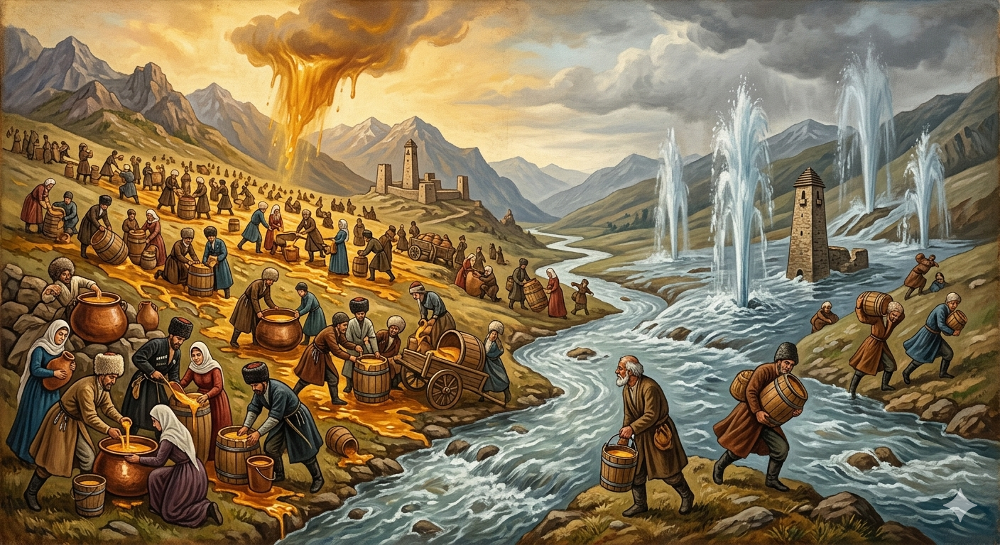

И.А. Дахкильгов. Хьехаме дувцарш - поучительные рассказы-притчи.
И.А. Дахкильгов. Хьехаме дувцарш - поучительные рассказы-притчи. Из ингушского фольклора.

Боарам боацаш я сага сутарал
МоцагӀа, пайхамарий замах, адам мел цӀаьрмата да хар духьа сигалара лаьтта модз мохкадаьд. Ӏалаьлой ала дукха хиннад из. Модз дӀаийде болабеннаб нах. Педашца, богашца, яьшца, ведарашца ийдеш, ийдеш, деррига модз дӀаийцад, хӀама ца дуташ. ТӀаккха лаьттара хий хьахийцад, кӀедж тохийташ. Дуне хьалдоаккхаш хий Ӏайнад. Хьалха дийлха модз миссел а, е дукхагӀа, е кӀезигагӀа доацаш хиннад из. Модз санна из хий наха дӀаийдаь хинна даларе, Нух-пайхамара кема де дезаргдацар. Иззал цӀаьрматеи сутареи да адам.
РУССКИЙ
Безмерна человеческая жадность
Когда-то, во времена пророков, решили проверить, насколько жадны люди. С неба вылили очень много меда. Он бы залил всю землю, но этого не произошло, так как люди начали брать мед ведрами, тазами, бочками и весь подчистую выбрали. Тогда пустили воду из земли. Забила она фонтанами и потекла по всей земле. Воды пустили на землю не больше и не меньше, чем ранее меда. Но люди не брали воду, и вскоре произошел потоп. Вот если бы люди с такою же жадностью, как они собирали мед, забрали бы и воду, пророку Нуху (Ною) не пришлось бы строить свой корабль. Вот насколько люди скупы и жадны.
ENGLISH
Human greed knows no bounds
Once upon a time, in the days of the prophets, it was decided to test just how greedy people were. A great deal of honey was poured down from the sky. It would have flooded the whole earth, but that did not happen, as people began to collect the honey in buckets, basins and barrels, and scooped it all up. Then water was released from the earth. It gushed forth in fountains and flowed across the whole earth. They released no more and no less water onto the earth than they had previously released honey. But people did not collect the water, and soon a flood occurred. If only people had collected the water with the same greed with which they had gathered the honey, the prophet Nuh (Noah) would not have had to build his ark. That is just how stingy and greedy people are.
НОХЧИЙН
ПОГОВОРКИ
Бордз ца кхийттача, хьаж-цӀа я яха, енай газа. - Коза, не встретившая волка, совершила паломничество (дошла до Мекки) и вернулась. ВоӀ воаца да пхьегий тӀа гӀийла лаьттав. - Мужчина, не имеющий наследника, понуро стоял при народе. Дош аьнначун да, хьалхагӀа аьннар бакъа а волаш. - Слово принадлежит тому, кто первый его произнес; он же и прав. Молла сагӀа делча, йилбазо (шайтӀо) зурма лекхай. - Иблис (шайтан) сыграл на зурне, когда мулла совершил подаяние. Ше ваь, хьалкхийна мохк малхала бӀайхагӀа ба. - Родимая сторона теплее солнца. Дулхах даь нӀаний тухо дошаду, тухах даь нӀаний безамо дощаду. - Черви в мясе соль уничтожит, а черви в соли лишь любовь уничтожит. Лазаро "ахӀ" оалийт. - Болезнь заставляет охать. Тухах яь гӀала догӀа йошаяьй. - Башню из соли дождь размыл. Хьаьшашта - сакъердам, фусам-нанна - бала. - Гостям - веселье, хозяйке - горе (большие заботы). Хьо малав ховргда сона, хьа новкъост малав хайча. - Я узнаю, кто ты, когда узнаю твоего друга.